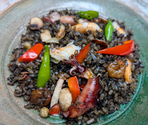

イカ墨のパエリア風
- 調理時間： 80分
- （一人当たり）
- カロリー：318kcal
- たんぱく質：8.4g
- 脂質：3.4g
- 炭水化物：60.9g
- 塩分：1.5g


＜お米3合分＞
- 無洗米
- 3合
- オリーブオイル
- 大さじ1
- シーフードミックス
- 100g
- カラーピーマン（赤・緑）
- 各1/2個
- マッシュルーム
- 5～6個
- シメジ
- 1/2パック(50g)
- コンソメキューブ
- 1個
- 水
- 3合分
- イカ墨ソース（市販品）
- 1袋
- 塩、コショウ
- 適宜


- シーフードミックスは、熱湯で下茹でする。
- カラーピーマンは食べやすい大きさに切る。
マッシュルームは半分に切る。
シメジは石づきをとっておく。 - 水を鍋で沸かし、コンソメキューブを溶かしておく。
- フライパンにオリーブオイルを熱し、無洗米を入れて炒める。
※無洗米でない場合、お米を洗い、ザルにあげて水気をしっかりきってから調理しましょう。
お米が透明になってきたら、シーフードミックス、カラーピーマン、マッシュルーム、シメジを加えて炒め合わせる。 - 炊飯器に④を移し入れ、③とイカ墨ソースを加えて、サッとひと混ぜする。
塩、コショウで味をととのえ、通常通り、炊飯器で炊く。
イカ墨のパエリア風
夏は、あっさりした味が好まれますが、寒い冬は、コクがあり、比較的濃い味のこってりした味が好まれます。これは、食べ物の温度とも関係してきますが、人は高温の食べものについて、味を弱く感じる傾向にあるため、温かい食べものを好む冬の味付けは濃くなると考えられます。ちなみに、中医学に基づく薬膳で冬は、腎が病みやすく、腎をととのえるには、「黒」の食材がよいとされています。今月のレシピは、イカ墨の旨味成分により、厚味も増し、コクのある一品に仕上がります。